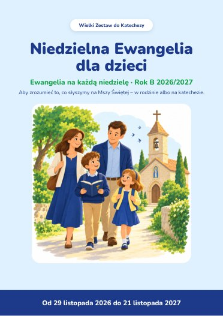

Wasza książeczka

PDFNiedzielna Ewangelia dla dzieci
Karta na każdą niedzielę: Ewangelia opowiedziana prostymi słowami, obrazek do pokolorowania, pytanie i gest do wykonania w rodzinie. 60 stron.
Pobierz PDFOtwórz w przeglądarceOd czego zacząć
- Otwórzcie kalendarz niedziel i świąt (strony 3 i 4), aby znaleźć kartę na dany tydzień.
- Wydrukujcie kartę i przeczytajcie ją z dzieckiem przed Mszą Świętą.
- Po Mszy zapytajcie dziecko, co zapamiętało z Ewangelii.
Do użytku osobistego, w rodzinie, w parafii lub w szkole. Odsprzedaż i dalsze rozpowszechnianie są zabronione.